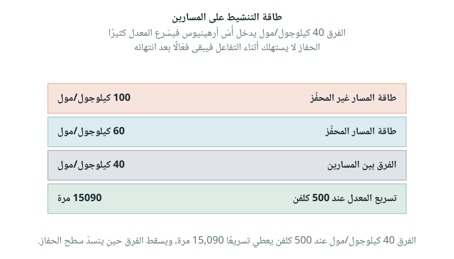

الحفاز
Catalyst
مادة تفتح مسارًا بديلًا أقل طاقة تنشيط فتزيد سرعة اقتراب النظام من التوازن، ولا تُستهلك في الحصيلة ولا تُغيّر موضع التوازن ولا حرارته.
الحفاز مادة تُدخل إلى وسط التفاعل فتفتح مسارًا بديلًا لتحوّل المتفاعلات، حاجزه الطاقي أدنى من حاجز المسار غير المحفَّز. لا يزيد مقدار الطاقة التي يفرج عنها التفاعل ولا يبدّل إشارته الحرارية، بل يخفض الحاجز الحركي الذي يمنع الجزيئات من العبور عند درجة حرارة معيّنة. ينتهي التفاعل وقد بقي الحفاز كما كان كيميائيًّا، فيدخل الدورة ويخرج منها، ولذلك تكفي منه كمية صغيرة لتحويل كميات كبيرة.
ينقسم إلى حفاز متجانس يكون في طور المتفاعلات نفسه، كالحفاز الحمضي في محلول، وحفاز غير متجانس يكون في طور آخر، كالحديد الصلب بين الهيدروجين والنيتروجين الغازيين. في النوع الثاني يجري التفاعل على السطح: تمتزّ الجزيئات على مواقع نشطة، وتتفكك روابطها، ثم تتحد ثم تنفصل، فتُقاس جودة الحفاز بمساحة سطحه النشطة وبمقاومته للتسمّم، لا بكتلته المضافة.
الحفاز لا يخلق تفاعلًا مستحيلًا حراريًّا. إذا كانت الطاقة الحرة للتفاعل موجبة بدرجة كبيرة بقي غير تلقائي ولو حُفِّز: يسرّع الحفاز الوصول إلى الحالة التي يسمح بها الديناميك الحراري، ولا يفتح حالة يمنعها.
كيف تعمل الظاهرة؟
تتصادم الجزيئات ملايين المرات في الثانية، ولا ينجح من التصادمات إلا ما كانت طاقته النسبية كافية لاجتياز قمة الحاجز بين المتفاعلات والنواتج. فتح مسار بديل يعني إدخال تكوين وسطي شبه مستقرّ، كمركّب ممتزّ على السطح له طاقة تكوين منخفضة وطاقة تفكك منخفضة في الوقت نفسه، فينشقّ حاجز واحد عالٍ إلى حاجزين أدنى. تنخفض مشتقة طاقة المسار الأول، فترتفع نسبة الجزيئات التي تملك الطاقة اللازمة عند درجة الحرارة نفسها، ويتضاعف معدل العبور. ثم ينفصل الناتج وتُستعاد المواقع النشطة، فتدور الدورة الحفزية كاملة وتُستهلك المتفاعلات وحدها.
العلاقة بالأرقام
يتبع ثابت المعدل معادلة أرهينيوس: k = A·exp(−E_a/(R·T))، مع R = 8.314462618 J/(mol·K). إذا كان المسار غير المحفَّز عند E_a = 100 kJ/mol والمسار المحفَّز عند 60 kJ/mol، فإن النسبة بين الثابتين عند 500 K تساوي exp((100,000 − 60,000) ÷ (8.314462618 × 500)) = 15,090، أي أن المعدل يزيد نحو 1.5×10⁴ مرة بلا أي تغيير في درجة الحرارة. وللتحقق من الحساب بالاتجاه المعاكس: الطاقة التي تتضاعف عندها السرعة كل 10 كلفن عند 300 K هي 53.6 kJ/mol، وهي داخل نطاق التفاعلات المحفَّزة الشائع.
مفاهيم متقاربة
الخلط الشائع أن الحفاز يرفع مردود التوازن أو يدفع التفاعل نحو النواتج. الحفاز لا يغيّر ثابت التوازن K ولا التغير القياسي في الطاقة الحرة ΔG°، لأن كليهما دالة لحالتَي المتفاعلات والنواتج فقط، والحفاز حاضر في الطرفين ويُختصر من التعبير. ما يفعله هو تقصير الزمن اللازم لبلوغ الموضع نفسه. الفرق الثاني أن الحفاز ليس متفاعلًا مستهلكًا: نقصانه التدريجي في الأنظمة الصناعية سببه التسمّم والانحلال الميكانيكي، لا دخوله في حساب المعادلة الموزونة. والثالث أن الحفاز يخصّ الحركية بينما يخصّ المتفاعل المحدّد حساب الكتلة، فلا يرفع حفازٌ مردودَ تفاعلٍ ناقصِ المتفاعل.
حدود التطبيق
ينهار وصف «المسار الواحد» حين يصبح التفاعل محدودًا بانتقال الكتلة إلى السطح: زيادة مساحة السطح النشطة لا تُظهر أثرًا لأن الجزيئات لا تصل إليه بسرعة كافية، ويُقرأ ثبات المعدل خطأً كفقدان نشاط. ويتعطّل النموذج أيضًا عند التسمّم: ترتبط جزيئات الكبريت أو المعادن الثقيلة بالمواقع النشطة ارتباطًا غير رجعي، فينقص عدد المواقع الفعّالة مع الزمن ويظهر معدل متناقص لا يفسّره ثابت a. وفي التفاعلات شديدة الطرد الحراري قد يختلّ التوزيع الحراري داخل حبيبة الحفاز وتنشأ نقاط ساخنة تغيّر الانتقائية، فلا يصحّ وصف الحالة بمتوسط واحد.

| الكمية | القيمة | المصدر |
|---|---|---|
| طاقة التنشيط على المسار غير المحفَّز | 100 كيلوجول/مول | [1] |
| طاقة التنشيط على المسار المحفَّز | 60 كيلوجول/مول | [1] |
| نسبة تسريع المعدل عند 500 K | 15,090 مرة (محسوبة من أرهينيوس) | [2] |
| طاقة التنشيط التي تتضاعف عندها السرعة كل 10 K عند 300 K | 53.6 كيلوجول/مول | [2] |
المصادر
- 1 Chemistry 2e — 12.7 Catalysis — OpenStax, Rice University. openstax.org/books/chemistry-2e/pages/12-7-catalysis · اطُّلع عليه 2026-11-16
- 2 CODATA Value: molar gas constant — NIST, Fundamental Physical Constants. physics.nist.gov/cgi-bin/cuu/Value?r · اطُّلع عليه 2026-11-16
- 3 Chemistry 2e — 13.3 Shifting Equilibria: Le Châtelier's Principle — OpenStax, Rice University. openstax.org/books/chemistry-2e/pages/13-3-shifting-equilibria-le-chateliers-principle · اطُّلع عليه 2026-11-16
استشهد بهذا المصطلح
الصيغتان مبنيتان من بيانات الصفحة نفسها: العنوان والتاريخ ورابط النسخة المنشورة.
الحفاز — Catalyst. (2026). ديوان المعرفة — انفراد. https://infiradev.com/diwan/terms/catalyst.html
@misc{catalyst2026,
title = {الحفاز},
titleaddon = {Catalyst},
howpublished = {{ديوان المعرفة — انفراد} — مرجع علمي عربي},
year = {2026},
url = {https://infiradev.com/diwan/terms/catalyst.html},
urldate = {2026-11-16},
note = {مراجعة علمية: مراجعة آلية — ديوان المعرفة (روابط المصادر + عقد المحتوى + وجود الرسم) 2026-11-16}
}
راجعه: مراجعة آلية — ديوان المعرفة (روابط المصادر + عقد المحتوى + وجود الرسم) 2026-11-16 · 2026-11-16 · آخر تحديث 2026-11-16